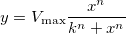

内容 |

Hill 関数式
参考文献Seber, G. A. F., Wild, C. J. 1989.Nonlinear Regression.John Wiley & Sons, Inc. p. 120
数：3
パラメータの名前:Vmax, k, n
意味:Vmax = unknown, k = unknown, n = unknown
下側境界:Vmax > 0, k>0, n>0
上側境界:なし
nlf_hill(x,Vmax,k,n)
FITFUNC\HILL.FDF
Electrophysiology, Growth/Sigmoidal